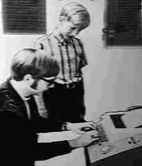
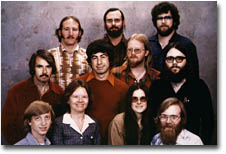

"640k should be enough for anyone."
-- Attr. to Bill Gates, Microsoft CEO, 1981
|
 Gates and Allen, ca. 1968 |
In 1975 Bill Gates and Paul Allen, who were students at Harvard University at the time, adapted BASIC to run on the popular Altair 8800 computer and sold it to the Altair's manufacturer, MITS. Although BASIC had been invented by others in 1964, the Altair BASIC interpreter was the first computer language program to run on the type of computer that would later become known as the home computer. While the BASIC programming language itself was already in the public domain by then, there was no interpreter that could run it on the first microcomputers, and the small microprocessor systems typically developed by hobbyists and researchers were still being programmed in machine code and often operated via switches.
Thus Gates and Allen could be said to have created an original product. One might even call it a true innovation.
It would be one of their last.
Gates and Allen initially met at Lakeside School (an exclusive private school for rich boys) where Gates became an adept at BASIC on a General Electric Mark II computer. Shortly thereafter they got access to a PDP-10 run by a private company in Seattle. The company offered free time to the Lakeside school kids to see if they could crash the system. Gates proved to be particularly good at doing so. When the free time ran out, Gates and Allen figured out how to continue using the PDP-10 by logging on as the system operator. About a year later the company that owned the PDP-10 went bankrupt.
This left Gates and Allen without a source of unpaid computing resources. Therefore Allen went over to the University of Washington and began using a Xerox computer by pretending to be a graduate student. Gates soon followed, and this went on until they were caught and removed from the campus. They continued to break into university and privately owned computer systems until about 1975. By that time Gates was a student at Harvard University, and HP had been selling the 9830 calculator (an expensive system for scientific and industrial math applications) for three years. The 9830 had a BASIC interpreter, which opened up a whole new range of applications outside the field of mathematical calculation. Whether or not Gates and Allen had actually seen a 9830 before they coded up their BASIC interpreter for the Altair is not known, but it is quite possible.
In any case, the BASIC that Gates sold to MITS had been developed and tested on a PDP-10 computer owned by Harvard, using an 8080-emulation program that Allen had adapted from earlier code. In fact, by the time Gates contacted MITS to announce their product, it had never seen an actual 8080 CPU. The demonstration Gates and Allen put up for MITS in New Mexico was the first time the product actually ran on the system it was intended for. Gates sold it by announcing a product that didn't exist, developing it on the model of the best version available elsewhere, not testing it very seriously, demonstrating an edition that didn't fully work, and finally releasing the product in rather buggy form after a lengthy delay. From then on this modus operandi became Microsoft's trademark.
After Gates sold the 8800 BASIC interpreter to MITS he left Harvard
University, and went into business for himself with Allen as a partner. Allen
was also an MITS employee at the time, which made his position somewhat
questionable.
Gates' departure from Harvard appears to be somewhat controversial. Some say
he dropped out, others say he was expelled for stealing computer time. Whatever
the case may be, the fact is that Gates did most of the work on his BASIC
version in a Harvard computer lab without having been authorized to use
the computing resources for the project. Perhaps he did not really steal
unauthorized computer capacity, which was a limited and expensive commodity
in those days, to develop his first commercially successful product. Yet he
has never offered any other explanation. He did however send his now-infamous
"Open Letter To Hobbyists" to every major computer publication in
February 1976, in which he decried the copying of commerical software
(especially Altair BASIC) by home computer hobbyists as simple theft. He
also claimed to have spent $40,000 in computer time developing BASIC, but
neglected to mention where that computer time came from.
Be that as it may... Gates was brilliant enough at the time to realize that he was sitting on a goldmine. While MITS demanded, and got, the exclusive rights to the software, Gates insisted on a clause in the contract where MITS agreed to "commercialize the product". These "best efforts" never panned out and Microsoft's income began to dry up. In 1977 Gates and Allen sent a letter of protest to MITS, whereupon MITS got a judge to restrain Microsoft from disclosing 8080 BASIC code to any third party. Microsoft was saved from bankruptcy only by payments for the 6502 BASIC from Apple Computer. (MITS only had the rights to 8080 BASIC, so Microsoft was allowed to port it to other CPU architectures and sell it all over again.) Then Microsoft sued their first customer MITS over the exclusive rights on 8080 BASIC, and won. They immediately went on to sell BASIC over and over again, to any other hardware manufacturer who would have it, from Commodore in Europe to Radio Shack in the US. Thus Gates' vision was one of the important factors in the creation of the home computer market of the late 1970's and early 1980's. (The other was the increasing availability of affordable VLSI computer chips.)
It went more or less the same when IBM came to Microsoft in 1980, for an operating system (OS) for their "Project Chess" which we now know as the development of IBM's new Personal Computer. Microsoft was still a small-scale operation in those days, making mostly software for the hobby and home computer market, and a few computer language products. IBM had another preferred supplier at the time: they went to Digital Research to discuss their needs for an OS for their upcoming PC. Gary Kildall, the founder of Digital Research, was the author of CP/M, the first operating system for microcomputers. This made Digital Research, and not Microsoft, the logical first choice for IBM, as CP/M would have fit their requirements. However, common lore has it that Kildall wasn't in Pebble Beach the day the IBM representatives arrived there for their appointment, and his wife and lawyer wouldn't sign the non-disclosure agreement until Kildall had returned. (That mistake has gone on record as perhaps the most capital blunder in the entire history of the PC industry.)
This, and time restrictions, led up to IBM's visit to Gates and his friends who, as rumor has it, were in the picture only because Gates' mother happened to know someone at IBM. This last detail may or may not be true; in any case it's a fact that Microsoft was a small company without management, without much administration or bookkeeping, with employees who slept on the floor behind their keyboards, and with a corporate culture based on shouting matches that were usually won by Gates. Microsoft had only worked on home computer software and programming languages at the time, and was not a supplier of operating systems or other system software. (Kildall himself has later added to this story that he did manage to contact the IBM representatives upon his return, discussed the deal with them, and was left with the impression that he had an agreement with IBM. Shortly thereafter he learned that IBM had signed contracts with Microsoft. This may or may not be true, but in any case it's hardly relevant here.)
When the IBM representatives showed up on his doorstep, Gates recognized this lucky break for what it was, and promised them an OS. Because he didn't have one and couldn't make one (at least not well enough and quickly enough) he bought the rights to a CP/M clone named QDOS from Seattle Computing Products, and filed off the serial numbers. Again Gates demonstrated his commercial genius at that point. He realized that although the PC was far from superior from a technological standpoint, IBM's position as a hardware manufacturer would go a long way to unifying the personal computer market, which had always been rather fragmented. Gates saw visions of minor investments resulting in huge sales figures. Innovation did not come into it at all; at the time the world's buildings, bridges and aeroplanes were mostly developed on VAX and Unix workstations.
So when IBM demanded exclusive rights to PC-DOS, Gates was adamant: IBM was prohibited from licensing Microsoft's software to third parties, but Microsoft itself was free to do so. Microsoft would sell MS-DOS to all interested clone manufacturers, just as they did with BASIC when MITS lost their exclusive rights. Thereby Gates created most of the basis for the PC market as we know it today.
This is Microsoft's contribution to the field of computer technology: before they sold BASIC and later DOS to any hardware vendor who would buy it, end users were completely dependent on a hardware manufacturer not only for hardware, but also for platform-specific operating systems and application software. Microsoft's marketing strategy put an end to that, and contributed to changing the vertical computer market into a horizontal one. For that the company deserves due credit.
But that is all. Microsoft applied the right leverage at the right time, and the market's natural inertia did the rest. The IBM PC happened to be based on an Intel 8086 processor. The CP/M-descended products now sold by Microsoft standardized on the 80x86 processor architecture and weren't portable to other platforms. That in turn caused Intel to continue the 80x86-based architecture. This symbiotic relationship popularly known as Wintel still continues today.
While Microsoft was the first to market (but not create) a more-or-less functional operating system for the IBM-PC platform, the company has never originated any significant technological improvement since Altair BASIC. At best they've modified and adapted existing technology, but nothing original or particularly innovative has been created by Microsoft ever since. The first version of PC-DOS (later MS-DOS) was little more than a revamped version of QDOS (or DOS-86), the code for which they bought from Seattle Computing Products (SCP). QDOS, which stands for "Quick & Dirty Operating System", was the work of Tim Paterson, a friend of Paul Allen's. It was derived (to such an extent that it has been called pirated) from CP/M. After its initial release numerous features, including suspiciously Unix-like but rather broken support for subdirectories, I/O redirection and pipelines, were hacked into Microsoft's subsequent versions of MS-DOS. This resulted in two or more incompatible versions of many system calls in the DOS kernel, and MS-DOS programmers could never agree on basic things like what character to use as an option switch or whether to be case-sensitive, or what file descriptor to use. Not much has changed in the twenty years that followed. When WIndows ME came out in 2000, all you had to do was look under the hood and the QDOS and CP/M legacies from elder days would stare you in the face.
As an interesting aside, while Gary Kildall had worked on CP/M for
years, Tim Paterson of SCP compiled QDOS in under 6 weeks. He left SCP
in 1981 and joined his friend Paul Allen at Microsoft. Later Kildall
allegedly went to IBM and pointed out where his own copyright statement
was still embedded in PC-DOS, but he did not dare fight it out with
the full force of IBM's legal division. To forestall legal action, IBM
offered consumers the choice of either CP/M or MS-DOS. But at $240, six
times the price of MS-DOS, CP/M was quickly headed for extinction.
Kildall's allegations of theft by SCP, and the fact that the differences
between QDOS and CP/M are minute at best, can't have escaped Microsoft's
attention at the time. This leads to the interesting conclusion that if
this is true, then Microsoft and IBM knowingly acted as fences, and Microsoft
founded a global empire on a crime.
|
 Microsoft team, 1978 |
In any case MS-DOS thrived. It remained the only PC operating system on the market for years, in spite of the fact that it was rather restrictive. In fact the restrictions it imposed upon the application developers prolonged its success: few developers were really happy with it, but they were stuck with it. MS-DOS offered way too little functionality, so that application builders were forced to make their application code carry out tasks that should have been performed by the OS. Some early applications (such as Lotus-123 and, more commonly, computer games) bypassed DOS entirely. In other products most peripheral access, video and printer communications (I/O) had to be done by having the application access the hardware directly in order to get a decent performance. Users had to know (and remember) the 's I/O port addresses, IRQ numbers and DMA channel settings for each hardware component when installing and configuring applications.
This lack of proper OS functions in MS-DOS resulted in application software less portable than the Rocky Mountains, which effectively forced software developers to stick with the MS-DOS platform in order to maintain their applications and protect their investments. DOS itself was non-portable as well, being largely written in Assembly language and containing a lot of low-level code and little structure. I've personally seen the DOS 6 source code. It's not a pretty sight.
By the time PC-DOS took hold, Gates had already shown that Microsoft's future would hold very little innovation indeed. Gates' views on development are probably best illustrated by the following:
From: 'Programmers at work', Microsoft Press, Redmond, WA [1986]:
Interviewer: "Is studying computer science the best way to prepare to be a programmer?"
Gates: "No, the best way to prepare is to write programs, and to study great programs that other people have written. In my case, I went to the garbage cans at the Computer Science Center and I fished out listings of their operating system."
Seldom have both Microsoft's lack of innovation and their kludgy, ad-hoc approach to software design been explained so concisely. It's also interesting to note that while many people have called Microsoft products copycat, trash or garbage, most of them probably had no idea how close to the truth they really were.
Indeed MS-DOS has seen little innovation in the two decades or so when it dominated the PC market. The most important improvement in DOS 2.0 was the addition of subdirectories and device drivers, ideas that were borrowed from Unix. Later versions came with a few extra functions in the kernel, and they boasted more tools and utility programs, initially written by Microsoft but later bought from third parties. Except for the additions in DOS 2 (subdirectories, device drivers) and DOS 5 (extended and enhanced memory management on 80286 and 80386 CPU's based on technology from Quarterdeck) DOS itself has only seen minor development. In the meantime Microsoft briefly sold Xenix (a rather unimpressive Unix port for the PC, which they bought outright from SCO) but when it failed to sell in huge volumes they soon lost interest and concentrated on DOS.
When Windows came into existence, Microsoft had been collaborating with IBM on OS/2 1.x for some time. This collaboration sprung from the insight that with the advent of the 80286 CPU and Intel's plans for the 80386, DOS had become obsolete. IBM worked mainly on the OS/2 kernel, which in its first incarnation was basically a 16-bit successor to DOS with a command line interface. Microsoft concentrated on the Graphic User Interface (GUI).
The idea for a Graphic User Interface was neither new nor original. Years before, Xerox had demonstrated a mouse-controlled GUI in their Palo Alto Research Center. This demonstration featured the Alto computer, which in 1973 sported a GUI, a mouse, graphic WYSIWYG technology and an Ethernet network interface. The demo was attended by Steve Jobs (Apple) and Bill Gates, among others. Jobs saw the possibilities of the GUI and went on to implement the idea into Apple's OS and application software, while Gates decided to stay with the text-based user interface. Later Gates was forced to revise his opinion about the GUI when it turned out to be successful on the Apple platform. Thus it was decided that OS/2 would have a GUI.
Soon Microsoft's code began to diverge from IBM's (especially from Presentation Manager, IBM's GUI component of OS/2) and became increasingly incompatible with it. Meanwhile Gary Kildall of Digital Research had already released the first version of GEM, a Graphic Environment Manager for DOS. In order to sabotage this, Microsoft announced that they were working on their own, much better, graphic environment. Eventually they took the GUI portion of what should have become OS/2 and sold it as a separate DOS product called MS-Windows. In its initial form it was mainly text based and hardly useful, but they claimed to work on it in preparation for the upcoming OS/2. In the meantime, application developers (e.g. Word Perfect Corp., Ashton-Tate and Lotus) spent huge R&D budgets on rewriting their applications for OS/2, assuming that the IBM/Microsoft partnership would deliver as promised.
MS-Windows could have been a new start, but (mainly for strategic and marketing reasons) it wasn't. It tightly clung to the mistakes of the past, being based upon the underlying MS-DOS architecture for basic OS functions such as file system access. It added a simple cooperative multitasker to MS-DOS, in a manner strangely like that of DesqView (a multitasker for DOS that had been available from Quarterdeck for years). It also sported a GUI that was so close to the one used by Apple that it kept lawyers occupied for over half a decade. But as far as innovation was concerned, that was it.
Initial versions of Windows were very bad, but Microsoft kept promising that a better product would come out Real Soon Now, still as part of their joint OS/2 efforts with IBM. Until one day, that is, when suddenly they turned their backs on OS/2. They cried "innovation" and went back to DOS in spite of earlier having admitted it to be obsolete. Then they went and dropped out of the collaboration with IBM entirely, taking with them a lot of IBM technology that had ended up in Windows, which they now suddenly positioned as the operating system of the future. They never even mentioned their earlier promises about OS/2 again.
Microsoft already sold applications for the Apple Macintosh. This gave them a good look under the hood of Apple's operating system software, and enabled them to muscle Apple into granting them a license for portions of the MacUI. (They threatened to withdraw all Mac applications, unless Apple would grant them a license to use MacUI code to port Macintosh apps to the PC.) They then raided MacUI for extra ideas. The remaining few bits (e.g. the font technology they later called TrueType) they bought, occasionally bartering vaporware that later failed to materialize. They also threw in a random collection of small applications, completely unrelated to an operating system (e.g. Paintbrush) which they had bought from various sources to flesh things out a bit. The resulting mixed bag of bits and pieces was massaged into an end product and released as Windows 3.0.
It was not too difficult for Microsoft to adapt the Apple versions of Word and Excel to run on Windows 3. There is some indication that Windows was adapted to Word and Excel as much as Word and Excel were adapted to Windows. By the time Windows 3.0 hit the market, competing application developers had already put their R&D money into OS/2 versions of their products, on the assumption that OS/2 would be delivered as promised by the IBM/Microsoft partnership. And now OS/2 did not materialize. But a blown R&D budget was only half the problem. Even if most of the application manufacturers had been wealthy enough to fund two separate development efforts to upgrade their DOS products, there was not enough time to do the Windows version before Windows' projected release date. The fact that the Windows API had not been published in any permanent form yet didn't help either. Without a good Application Program Interface (API) specification, an application developer is not able to interface with the operating system or with other software products. This essentially prevents application development. And Microsoft was the only application vendor at the time who knew enough about the Windows API to come up with a market-ready product.
So Microsoft shipped both an OS and an application suite, several months before their competitors in the applications market had a chance to catch up with Microsoft's last-moment switch to Windows. And that was that. All those who had expected to sail with the IBM/Microsoft alliance missed the boat, when Microsoft suddenly and deliberately decided to cast off earlier and in another direction than they had originally promised. Most of the independent application vendors never recovered.
IBM eventually went on to release their own version of OS/2, and botched it completely. This is partially due to the fact that by the time OS/2 hit the market, that market had already been taken away from them by Microsoft, especially because most application developers had committed themselves to Windows by then. They used Windows development tools, so their code had become extremely hard to port to another OS. Native OS/2 application software remained scarce, and hardware support was even a bigger problem.
Even so, IBM remains responsible for much of the demise of OS/2. Although it had an infinitely better architecture than Windows, OS/2 was killed off by some of the worst strategic and marketing decisions in the history of the industry. Its brief and unhappy existence was marked by a lack of drivers and hardware support, a lack of development tools, and a lack of applications. In typical IBM fashion the end user was expected to manually edit a 4-page CONFIG.SYS file to configure the system. Partnerships with hardware vendors to ship OS/2 with systems that didn't have the power to run it properly made the problem even worse. Lack of good marketing drove the final nail into OS/2's coffin.
After this debacle IBM withdrew from the desktop software market which they had never really understood, in spite of having created the original IBM PC.
Creating a better software platform would have been a real innovation, but that would have meant to abandon DOS, which was all that Microsoft had at the time. Since DOS applications were practically non-portable, a new and better OS would have broken the ties that bound developers (and therefore users) to Microsoft. In order to maintain their market share, Microsoft chose not to innovate. So for reasons of marketing, Windows 3.x ran on top of DOS as little more than a hybrid multitasking shell.
The Windows 95 architecture was merely a continuation of Microsoft's uninnovative strategy. When Windows 95 was released no less than three years later (Windows 93 was planned but never made it) it still turned out to be a disappointing rehashed DOS-based product. It still ran on top of DOS as an application-level shell, although DOS and Windows were now installed from a single bundle rather than as separate products. Basically Windows 95 was nothing but plain old Windows 3.x with a new GUI and a souped-up memory manager, and the formerly separate DOS code integrated in the bundle. This did not stop Microsoft from marketing it as a completely new 32-bit OS, which of course it wasn't. Granted, portions of the code were 32-bit, but there was still a lot of 16-bit code running under the hood, and memory protection was partially functional at best. Windows 95 and its successors still relied heavily on obsolete DOS code. Windows 98 (Windows '97 was planned but again never made it) was not a significant improvement in this respect either, and Windows ME was just more of the same tired old stuff, plus a lot of new bugs. It was still DOS-based, although Microsoft had gone to great pains to hide that fact, through many cosmetic changes and the bundling of application software with the OS. Basically there's nothing new to the whole Windows 95/98/ME product line; most design flaws from previous Windows versions right back to 3.0 are still present, and many new flaws have been introduced. When you get right down to it, Windows ME wasn't much more than the repackaged Windows 3.x descendant that Windows 95 was, full of architectural ineptitude and based upon technology that has been obsolete for decades, with a lot of extra bells and whistles thrown in to confuse the issue.
None of this has stopped Microsoft from presenting all these minor updates as new products and pushing them as recommended upgrades.
"Windows [n.] - A thirty-two bit extension and GUI shell to a sixteen bit patch to an eight bit operating system originally coded for a four bit microprocessor and sold by a two-bit company that can't stand one bit of competition."
(Anonymous USEnet post)
Windows NT finally appeared to be a step in the right direction. At least the NT product line (which includes Windows 2000, XP and Vista) is the better one. 'NT' stands for 'New Technology', presumably because Windows NT is one of the few keystone products in the history of Microsoft that they didn't buy outright. Instead they hired David Cutler, who had played an important role in the development of VMS at DEC (Digital Equipment Corporation). VMS was a successful and innovative industrial OS in its days, and Digital had been working on it since the 1970's. Cutler took some 20 former Digital employees with him, and he and his team began the development of NT. The project eventually involved hundreds of other coders and testers, but Cutler and his core team of VMS engineers provided most of the know-how that went into NT's kernel code.
As a result, many design principles found in the VMS kernel ended up in Windows NT. (The number and splitting of priority levels in the scheduler, the use of demand-paged virtual memory and the layered driver model are only a few examples of many, many similarities.) The first version of VMS was released in 1977. Without trivializing the efforts of Cutler and his team (they did a lot of work on the project) one has to wonder what Microsoft really means with "New Technology". To illustrate, in a little known out-of-court settlement Microsoft paid DEC $150 million in compensation for using portions of old Digital OS code in Windows NT.
Ehm... New Technology...??
Even though its roots go back to the 1970's, the Windows NT product line is a big improvement over Microsoft's DOS-based products. Unfortunately that doesn't automatically mean that it's a well-designed operating system.
Cutler's team had to operate within Microsoft's additional design restrictions, and the result was a tradeoff. Cutler took a number of design principles from VMS, which was good. They expanded on that, so in a way NT can be said to contain at least some "New Technology" and perhaps Cutler's work even represented (dare I say it?) some innovation, in that it brought robust design principles to the IBM PC platform. Had that been all, the end result could have been a good, efficient and robust OS. But Gates needed a vehicle that would further Microsoft's marketing strategies, rather than a robust OS. And of course much of the eventual coding on NT was done by Microsoft engineers, so in the end the quality of NT's final code wasn't even in the same league as VMS.
VMS was an industrial-strength operating system with native clustering, but NT was to be a single-user desktop operating system. Account and data management were rudimentary; the user home directory resided on the workstation's local harddisk, under the subdirectory that held the bulk of the operating system code. Applications and user settings were system-based rather than account-based. Separation between OS code, user settings, application code and configuration data became all but impossible; application and GUI settings were stored along with vital operating system information in an insecure central registry that was also system-based. Therefore network-based user accounts could only be implemented with complex and cumbersome workarounds. One of the biggest design mistakes in the history of Windows (the design of the DLL subsystem) was perpetuated, and networking was initially based on the hopelessly inadequate NetBEUI protocol. Even though NT followed a peer-to-peer networking model, a separate "NT Server" version was shipped. (NT Server contained exactly the same code as NT Workstation, with a few additions that amount to only a fraction of the product's total code set.) Initially there had been intentions of portability to non-Intel hardware, the incorporation of a Hardware Abstraction Layer, and versions of Windows NT on Digital and other platforms, but as the market became more and more monolithic these good intentions fell by the wayside. Eventually Digital did the same.
So at the end of the day Microsoft's marketing prevailed over Cutler's engineering. The result wasn't pretty. NT became an OS based on a set of old VMS design principles that were made compatible with everything that Microsoft had ever done wrong. It was full of legacy API's, it was kludged up to run applications written for OS/2 1.0 (but not very well), it paid lip service to POSIX but never offered anything more than fractional POSIX compliance, and it sported a Windows 3 GUI that had its roots in both Apple's and IBM's user interfaces. It even contained the entire Windows 3 kernel and the bulk of its accompanying code (and Windows XP still does) in the original 16-bit executables, as well as the complete set of decades-old DOS code. In short, it was a real Microsoft product. All later versions of Windows that descended from this piece of "New Technology", right up to Windows Vista, suffer from this legacy.
Sic transit gloria Fenestrae.
It's rather ironic that Microsoft prides itself on their "innovative role" in the IT market. The sad truth is that Microsoft has rarely been an innovator. They purchased a CP/M ripoff and named it MS-DOS, and they cobbled Windows together from various bits and pieces that they bought, stole or borrowed. The graphic user interface for Windows was based on IBM know-how and the user interface of the Apple Macintosh, which was in turn derived from technology developed by Xerox ages ago. NT was based on good but old VAX VMS design principles. In short, all Microsoft OS products only implement features and ideas that have been around for as much as a quarter of a century.
Later versions of Windows contain no significant improvement over previous
versions. Windows 98, ME, 2000, XP and Vista are in fact 'point releases';
they're relatively minor updates that contain mostly fixes, new bugs, and a
few small extras that used to be sold separately but are now bundled into the
package. For example: Windows XP comes with application software for scanners
and digital cameras, or the "remote desktop" feature that was
formerly sold separately by Citrix. The rest is little but cosmetics. The
whole product line remains riddled with serious design flaws, kludgy code to
work around those flaws, and tons of bugs. There's been little reason to switch
from Windows 95 to 98 (except perhaps the discontinuation of support and
maintenance on '95) and none at all to switch to ME. Windows 2000, XP and
Vista contain mostly bug fixes and work-arounds. Neither 2000 nor XP or Vista
offered a proper Return On Investment to users of previous versions, and
there's little or no demand for any of the extras that come with them.
In fact in August 2005 a significant percentage of Windows services was still
based on NT4, while Windows 2000 was still the most common version on the
desktop. Especially the latter was interesting, as Microsoft had discontinued
support for this version by then. Windows XP was around for about five years
and by the end of that period had become the most common version, but few
XP users have found reason to upgrade to Vista.
Nevertheless Bill Gates called Windows XP "a very big thing" and
Steve Ballmer said that "Windows XP is a more significant advance forward
than anything since Windows 3.0". Microsoft's rhetoric on Vista was even
more unrealistic.
Windows XP was the next version of the Windows NT/2000 product line, but it was marketed as a replacement for Window 9x/ME. By default it sports a seriously dumbed-down user interface. This insulting toy box, apparently aimed at users aged 1 - 4 and technophobes who are scared off even by Macintosh desktops, can fortunately be overridden but is always installed by default. Under the hood XP has a Windows-2000 kernel. There are a few slight improvements to the kernel code, but nothing dramatic. Of course there is also a lot of additional application software bundled with it, especially third-party multimedia products that MS bought and re-branded.
XP's release was timed to coincide with the discontinuation of the 9x/ME line, as part of Microsoft's repositioning of their Windows product lines. Through this admittedly clever marketing trick, end users were encouraged to compare XP with Windows 9x/ME and think of it as a new product, which was of course rather misleading. XP was just an overpriced point update of Windows 2000 and nothing more.
Incidentally, 'XP' stands for 'eXPerience'. Apparently Microsoft thinks we need a new 'experience' with our operating systems and applications, and that we sit at our computers expecting to be entertained by OS features and a spreadsheet or two. And indeed most of the 'improvements' in XP are on the presentation level. If you look in some executables in the Windows directory, you find internal labels like "ProductName: Microsoft Windows (TM) operating system, ProductVersion: 3.10". There's even DOS 5.0 code with a 1981-1991 copyright date. What a great new product. Of course it makes sense to provide compatibility modes for old Windows applications, but to find the bulk of Windows 3.10 and DOS 5 (all of it 16-bit code) up to and including EDLIN, installed under the hood of Windows XP makes you wonder about the design principles that have gone into each "new" version of Windows.
Microsoft released XP on a marketing budget of half a billion dollars to promote it. None of the new cosmetic bells and whistles in XP actually made it any more stable than Windows 2000 was, but that hasn't stopped Microsoft from marketing XP as the OS that "keeps on running" instead of crashing, and that protects the users from viruses. How's that again? Vista was also marketed as a "multi-media operating system" in spite of the fact that there's nothing multi-media about the OS itself. It comes bundled with a few applications for digital photos and video (which Microsoft bought and put into the box) and of course with Microsoft's own MediaPlayer application, but that has nothing to do with the operating system itself.
XP's successor, Vista, turned out to be similarly long on empty marketing rhetoric and short on innovation. According to Microsoft Vista will "Bring Clarity To Your World!" and "enhance your confidence in PC technology and give you a new outlook on the digital world around you". Vista was also said to "help you to organize information intuitively and to stay in touch with information, people and resources, so you can enjoy life more!" The truth is of course that this new version of Windows is mostly an 'XP 2nd edition' release. No surprises there. Vista has the usual many small improvements, several of which have something to do with security, and some attempts to work around Windows' most gaping shortcomings. None of these really address any real design flaws, except perhaps the improved access privileges. Vista also has a heavy dose of features related to Digital Rights Management (DRM) and more options for the integration of (and dependency on) Internet based services. There's a lot of extra gadgetry in the user interface and on the application level. Some menu's and features have been restructured a bit more conveniently (for example wireless networks are now grouped with the other network setup options and no longer separate) and everything looks very slick.
There are no significant, major or structural improvements in Vista to justify an expensive upgrade, though. Many of the announced features have failed to materialize, and what's left is mostly a new search facility, a few extra features for laptop computers, a parental control feature, several features for remote access, and a downright bizarre set of hardware requirements. But in Vista the windows now have rounded corners, semi-transparent backgrounds, and zooming and fading effects! Oh yes! Vista also has shiny glassy buttons, a sidebar with a calendar and a photo slideshow, all of which is strangely reminescent of Apple's UI design. Buttons and icons now can show a tiny representation of a window or document. And of course the system folder icons now show a three-dimensional representation of a folder, standing vertically on a horizontal surface, complete with shadow effects! How... innovative.
In the application market things aren't much better. MS Word isn't quite the word processor that Word Perfect was, a fact that MS attempted to gloss over by adding functions that really belong to desktop publishing software (but cannot replace it for serious applications). As a result, Word lacks many features that users would like to have (such as the option to view markup codes) but at the same time it has become so loaded with other features that its complexity is actually counter-productive. Excel, originally developed on the Apple platform, doesn't really do anything that Lotus-123 couldn't do in the nineteen eighties (although it has a fancier user interface and more graphic capabilities) and comes loaded with macro bugs and version problems to boot. Microsoft Access is something halfway between a 'flat' database and a relational database system, combining the advantages of neither with the disadvantages of both. The first line in the 'About' window in Internet Explorer says "Based on NCSA Mosaic" (which was the very first web browser to be used during the Stone Age of the World Wide Web) and PowerPoint merely duplicates the functionality that other presentation packages already offered in the late nineteen eighties. (Unless of course you count the Visual Basic hooks that virus authors and hackers are having such a ball with.)
In fact, none of these products use any significant technology invented by Microsoft. Sure, they're all dressed up like maypoles with tons of gadgetry and flashy colors, and the implementation of the old technology has become more streamlined, especially when it comes to exchanging data between applications. They've been ported to Windows so their user interfaces have a uniform look-and-feel (but are still inconsistent) and IBM's data exchange techniques such as OLE give the impression of integration. But in fact it's all old technology. This isn't innovation; it's recycling. To illustrate: several of the files that came with Word 97 (and perhaps with later versions as well) still contained the text "Copyright WordPerfect Corporation 1994. All rights reserved." I rest my case.
Microsoft's future plans are full of the same kind of "innovation". Their long-term strategy involves client systems that will be used to access server-based or network-based applications and services. This idea is known as ASP (Application Service Providing). It moves applications from the workstation to a central server, and does away with the need to install, maintain and run application software locally on workstations.
Of course Microsoft claims that this approach is innovative. In truth there's very little innovative about it. Essentially it's a step back to the decades-old host-with-terminals approach. Microsoft will almost certainly be able to rewrap it in a more attractive package, but that's as far as their innovation is likely to go. All you need to offer network-based applications and services today (as well as twenty years ago) is a server (which would typically run Unix) with a bunch of applications and some graphic terminals. Granted, the X protocol (the most popular graphic terminal standard on Unix systems) is more than a little ugly and unsuited for anything but LAN's. However, the implementation of a more elegant and efficient client/server protocol layer (e.g. ICA or something similar) would be rather trivial. At that point all that Microsoft's developers need to do is to recode their system and application products so that resources are used efficiently (as they should have done in the first place) and move the applications back to the server where they originated decades ago. Given the current sorry state of affairs on the Windows platform, that might even be an improvement... but not innovative.
The machine in Redmond lumbers on. More gadgets, more flashy colors, more overhead, more old stuff with a new paint job, all marketed as new technology which they claim to have personally invented from scratch. They dress up their "technological innovations" with flashy names like Single Instance Store, to disguise the fact that Single Instance Store is nothing but a slightly souped-up version of the symbolic links that have been around on Unix systems for about three decades. Another "innovation" is the addition of the Narrator text-to-speech converter as an aid for the visually impaired. A useful feature, granted... but innovative? We've had commercial text-to-speech conversion since the early nineteen eighties. Even most of the cosmetic changes in Windows Vista were "inspired" by Apple's desktops, and Internet Explorer 7 was mostly an attempt to copy some of the most popular features from Mozilla Firefox.
Microsoft apparently thinks that R&D stands for 'Rewrap & Disguise'. A baroque excess of features presents itself to the user, mainly to hide the fact that the software contains nothing that rightly could be called innovative. In spite of a marketing budget of some five billion dollars a year, the best Microsoft has managed to do is repackage various ideas as their own, list TCP/IP under 'Microsoft protocols' in Windows, tout that they've "assisted with IPv6" (they did what, exactly?) and of course they came up with an animated paper clip. Windows hasn't added one basic service to the PC that wasn't available on, say, a Sun workstation in 1990. Yes, hardware has become cheaper, smaller, faster and more powerful (just like all other electronics on the market) so today's PCs look much better than those old workstations. But basically no new technology has been invented by Microsoft that really adds new capabilities to a personal computer.
Microsoft Research, in spite of an astronomic budget, hasn't come up with any truly useful technology so far. Name one, just one, major piece of useful technology that's ostensibly been invented or developed by Microsoft. One single original concept, that's all I ask. Name it, and I'll tell you where they got it from.
Innovation? Yeah, right.
Comments? E-mail me!